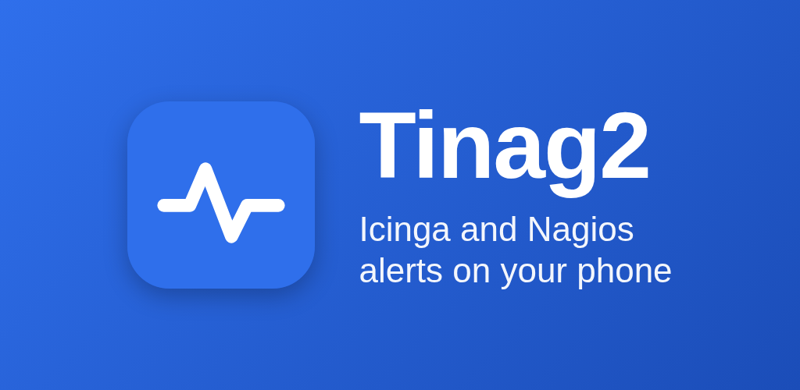
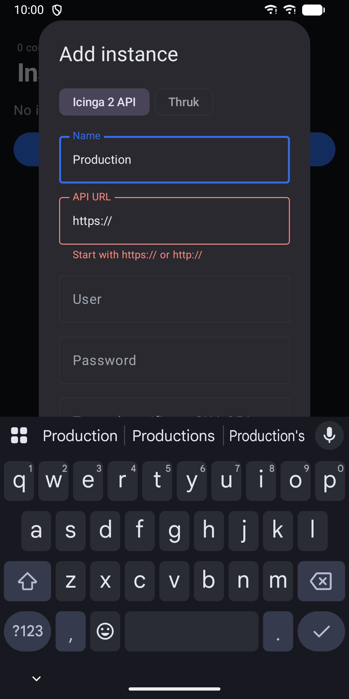

Tinag2: Alertas Icinga/Nagios
Vigila problemas de Icinga 2 y Nagios, reconócelos y recibe alertas.





Acerca de la app
Tinag2 es un cliente Android para Icinga 2 y Nagios/Naemon (a través de Thruk). Mira qué falla, actúa y recibe avisos, directamente desde el móvil. Conecta tus propios servidores de monitorización. Puedes añadir todos los que necesites; se consultan en paralelo. La aplicación solo habla con los servidores que tú introduces. No hay cuenta ni servidor del desarrollador. RESUMEN - Recuento de problemas críticos, avisos, desconocidos y hosts caídos - Tarjeta "Needs you now" para los problemas sin atender - Barra de salud de los servicios y una tarjeta por servidor - Muestra la antigüedad de los datos y conserva los últimos datos buenos si un servidor no responde PROBLEMAS - Una lista ordenada por urgencia: primero los sin atender, primero el peor estado, primero los más antiguos - Filtros para sin atender, críticos, avisos y estados duros - Búsqueda por texto o expresión regular - Los servicios de un host caído se ocultan por defecto - Los problemas reconocidos o en mantenimiento se muestran atenuados - Desliza a la derecha para reconocer y a la izquierda para volver a comprobar. Las mismas acciones están disponibles como acciones de accesibilidad. - Vista de detalle con estado, intentos de comprobación, salida, última y próxima comprobación - Programa un mantenimiento de una hora ALERTAS - Avisa solo de problemas nuevos o que han empeorado - El aviso desaparece cuando el problema se recupera o se atiende - Reglas: avisos activados o no, omitir estados blandos, omitir reconocidos, omitir mantenimiento, esperar 5 minutos antes de alertar - Horas de silencio de 22:00 a 07:00, con opción de dejar pasar las alertas críticas - Canales de notificación separados para críticos y host caído, avisos, desconocidos y problemas de conexión - Reconoce directamente desde la notificación WIDGETS - Un widget de recuentos con críticos, avisos y desconocidos - Un widget de lista con los problemas sin atender más urgentes CONEXIÓN Y SEGURIDAD - API REST de Icinga 2 y API REST de Thruk - Autenticación básica HTTP - Fijación opcional de la huella del certificado, para servidores con certificado propio - Las contraseñas se cifran con el Android Keystore - Se permite HTTP sin cifrar en redes locales, y la aplicación te avisa - Sin anuncios, sin analítica, sin rastreo DETALLES - Sincronización en segundo plano cada 15 minutos y actualización al deslizar - Tema claro y oscuro según el sistema - Navegación inferior en el móvil y vista de lista y detalle en tabletas Tinag2 necesita un servidor Icinga 2 o Thruk al que puedas acceder desde el móvil.